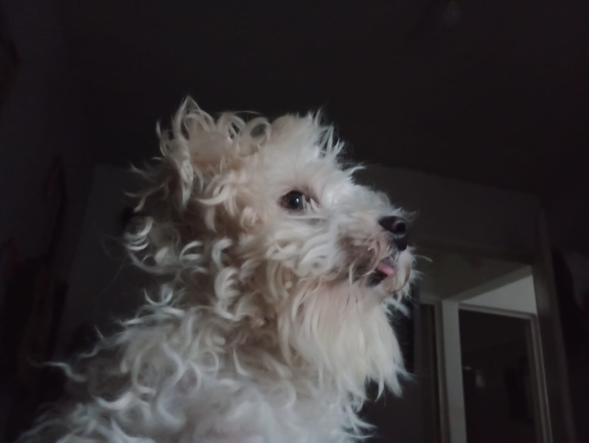

Rocky

Mr. Pickles
Simba
Mi nombre completo es Yahir Gómez Hernández, soy Mexicano, originario del estado de Chiapas.
Nací el 20 de Julio del 2004 en Tuxtla Gutiérrez, y actualmente vivo en Chiapa de Corzo.
Soy una persona que no tiene censura es sus pensamientos, lo que pienso de algo lo digo, siempre y cuando no vaya a herir mi comentario a alguien. Soy alguien a quien le gusta escuchar a las personas, y si se puede, apoyarlas. Soy alguien terco, y cuando me enojo, orgulloso, aunque al final siempre trato de arreglar las cosas con la persona con al que tuve la discusión. Algo de lo que no estoy orgulloso es que suelo ser muy contestón cuando ya estoy enojado o irritado. Y pues algo que tengo es que no me suelen dar "taboo" algunos temas que se pueden tomar como "temas que no se cuentan a cualquiera", por supuesto, sé guardar secretos. Y algo que tengo es que siempre suelo dudar de la información que me dan, soy muy eséptico en eso, más que todo cuando son anecdotas que pueden sonar muy exageradas, puede que sean verdad o puede que no. Por último y no por eso menos importante tengo 3 mascostas,2 perros y un hámster.
Rocky
Mr. Pickles
Simba